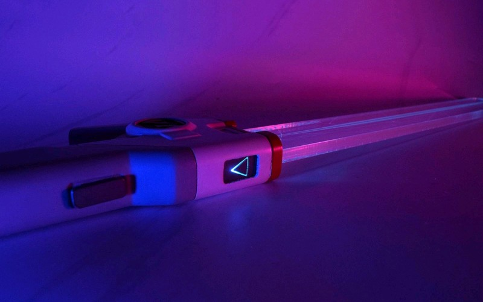
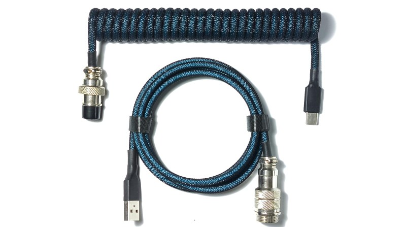
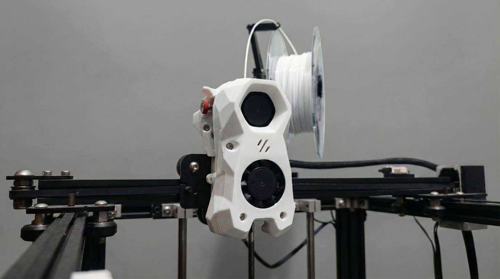

All Projects
Kumpulan proyek teknologi, digital marketing, dan engineering yang telah saya kerjakan dengan dedikasi tinggi.

Advanced 3D Figure Replication
Replika figur 3D dengan tingkat kemiripan tinggi, detail presisi, dan finishing premium hasil produksi profesional.

Premium Custom Coiled Aviator Cable
Kabel keyboard coiled aviator custom dengan standar premium, dirancang untuk estetika, daya tahan, dan performa koneksi yang optimal.

Voron Stealthburner Integration
Modifikasi toolhead Ender 5 ke sistem Voron Stealthburner dengan hotend TZ E3 untuk meningkatkan performa thermal, airflow, dan kualitas cetak.